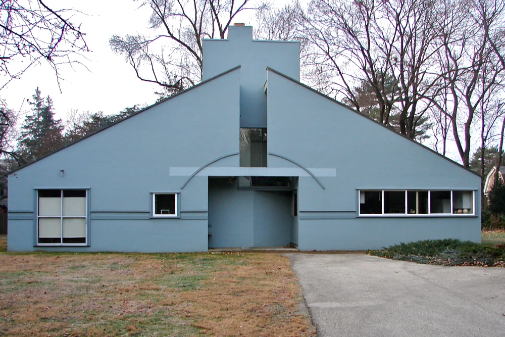

ここを見てみよう。
大きな三角屋根が中央で割れ、その奥に煙突が立っています。左右で異なる窓と、入口の上の弧にも注目できます。
本文公開・実作品画像1点／画像の収録は継続中
複数分野にまたがる歴史的潮流
Postmodernism
昔の建物にあった形を、変えて使う。
思いがけない色や材料を、家具に組み合わせる。
ポストモダニズムでは、こうした飾りや遊びも、物づくりの大切な部分として考えました。
使いやすさだけでなく、見た人が何を感じ、何を読み取るかにも目を向けます。
ORIGINAL EXPLAINER · 自作解説図
同じ架空の三段収納の二案。Bは収納構造を保ち、円・三角・赤い部材を追加して遊びのある表情を与える。
実在する代表作の画像ではありません。見るポイントを学ぶために、このサイトが作った例です。

解説図｜このサイトが作成した比較例。同じ架空の三段収納の二案。Bは収納構造を保ち、円・三角・赤い部材を追加して遊びのある表情を与える。 実在する歴史的代表作の画像・復元ではなく、特定作家の模倣でもありません。様式全体の定義や優劣を示す図ではありません。
考え方を確かめる美術館の資料 ↗ · 参照先がこの図を制作・監修したわけではありません。
解説図を大きく開く ↗実作品を見る

画像を表示できませんでした。下の出典ページで確認できます。
ロバート・ヴェンチューリ / 1962–1964年建設
2010年12月11日に撮影された正面外観です。建設当時の写真ではありません。
大きな三角屋根が中央で割れ、その奥に煙突が立っています。左右で異なる窓と、入口の上の弧にも注目できます。
ロバート・ヴェンチューリ《ヴァンナ・ヴェンチューリ邸》、1962–1964年建設。フィラデルフィア、米国。PD-self：撮影者によるパブリックドメインへの提供と、利用許可の補足条項。写真：Smallbones、2010年12月11日。ウィキメディア・コモンズより。
出典で作品・資料を見る ↗PD-self：撮影者によるパブリックドメインへの提供と、利用許可の補足条項
建築の著作権が世界中で消滅したという意味ではありません。日本の著作権法46条による建築の写真利用と、米国の1990年以前に建設された建築の扱いを区別しています。
写真：Smallbones。撮影者自身によるPD-selfの提供。提供が法的に認められない地域でも、無条件の利用許可が併記されています。CC0ではありません。
正面外観の写真です。撮影位置が公道であったとは断定していません。
表示用画像は縦横比を保って縮小しています。原画像の寸法と取得時のハッシュは出典記録に残しています。
この掲載は日本・米国向けの作品解説としての利用です。他国での再利用や、室内・家具・図面の転載まで許諾するものではありません。
出典先の原画像を開く ↗画像の利用条件 ↗全体を残して縮小したJPEGとWebPです。切り抜き、拡大、色補正はしていません。原画像は出典先のリンクで開けます。
作品の知名度や画像の入手しやすさだけで選びません。紹介したい作品と、調べて分かったことをまとめました。画像を載せられるかどうかは、別に確かめています。画像の利用許諾を確認できていないものは掲載していません。
architecture
この家では、昔からある建物の形をどう使ったかを考えます。
ただ古い形をまねるのではなく、変えて使うことに目を向けます。
作品・資料の出典を見る ↗作品名（出典表記）：Vanna Venturi House
Robert Venturi; collaboration to verify / 1962–1964 / architecture
1962–1964年の住宅を対象とし、掲載写真は2010年12月11日の外観です。この一軒だけで、ポストモダニズムの建築全体を説明するものではありません。後年の改変や共同設計者の詳細は、この写真だけでは確定できません。
昔からある建築の形を取り入れ、いくつもの意味を読み取れる住宅として見る候補です。
作品の内容を説明する見出し
原題：Carlton room divider
部屋を仕切るための家具です。
何に使うかだけでなく、色や飾り、形が伝えることも比べます。
furniture / laminate
家具の使い道、飾り、色、形が伝える意味の関係を考える候補です。
代表例として取り上げたい候補です。どの版か、いつつくられたか、誰の作か、なぜ代表例といえるかを、それぞれの一次資料で確認するまでは確定しません。
個別作品の一次確認待ち
作品の内容を説明する見出し
原題：Portland Building
多くの人が使う建物です。
昔からある建築の形を取り入れ、大きくして使う方法に目を向けます。
architecture / civic building
昔の建築の要素を取り入れ、大きくして使う方法を、公共建築で見る候補です。
代表例として取り上げたい候補です。どの版か、いつつくられたか、誰の作か、なぜ代表例といえるかを、それぞれの一次資料で確認するまでは確定しません。
個別作品の一次確認待ち
作品の内容を説明する見出し
原題：Does It Make Sense?, Design Quarterly 133
人の体のイメージと、コンピューターによる処理を組み合わせた作品です。
いくつもの層を重ねた画面が、どう見えるかを考えます。
graphic design / digital image
デジタル処理、人の体のイメージ、いくつもの層が重なる画面の関係を、グラフィックの作品で見る候補です。
代表例として取り上げたい候補です。どの版か、いつつくられたか、誰の作か、なぜ代表例といえるかを、それぞれの一次資料で確認するまでは確定しません。
個別作品の一次確認待ち
作品の内容を説明する見出し
原題：Super lamp prototype
本格的に製品にする前に、試しにつくられた照明です。
メンフィスという集団の仕事を、日常で使う物から考える例です。
後から多くつくられた製品とは、区別して見ます。
照明・プロトタイプ
V&Aがポストモダニズムの説明に使っている照明です。建築や書棚だけでなく、日常の製品から、メンフィス（Memphis）という集団と大きな動きの関係を考える候補です。
所蔵されているのは試作品です。量産されたものや、後の復刻とは区別します。メンフィス一つの集団だけでポストモダニズム全体を代表させず、別分野の候補も並べます。画像を実際に見て細部を分析する作業は、まだ行っていません。
デザインに、いつでも誰にでも当てはまる正解はあるのでしょうか。ポストモダニズムは、その問いを投げかけた動きです。昔の形を取り入れること、いくつもの意味、飾りや遊びを、もう一度デザインの大切な問題として考えました。派手な色を使うだけの様式ではありません。
建築、製品、印刷物などのデザインでは、話題になった問題も時期も違います。「使いやすさや働きを否定した」とひとまとめにはできません。形が何を意味するか、どんな場所や状況で見られるかを、どう扱ったのかに注目します。
以下は観察のための問いです。すべての作品に共通する固定ルールや、未取得画像の実見結果ではありません。
鮮やかな色どうしのぶつかり合いや、繰り返す模様、異なる材料の組み合わせを見ます。落ち着いた表現の作品も含まれます。
昔の書体を取り入れたり、いくつもの声が聞こえるように文字を使い分けたりした例を見ます。別の表現を引用することや、重要な情報から順に読むという決まりを揺さぶることにも注目します。
古典的な形を変えたもの、円や四角などを使った遊び、意外な材料の組み合わせを探します。見慣れた形が、少し違うだけで別の意味に見えてきます。
いくつもの層を重ねること、昔の表現を取り入れること、あえてつじつまを合わせないことに注目します。そこからどんな意味を読み取るかは、見る人との関係でも変わります。
COMPARE
メンフィス（Memphis）は、特定のデザイナー集団の名前です。ポストモダニズム全体を指すわけではありません。現代のネオ・ブルータリズム（Neo-brutalism）や、2000年前後の表現を取り入れるY2Kリバイバルも、それぞれ別の時代の動きとして見ます。
項目を横に並べる ↗READ TODAY
ブランドやウェブサイトで、異なる時代や様式を組み合わせる「折衷（せっちゅう）」の表現を読む手がかりになります。ただし、見た目が似ているだけで、考え方まで受け継いだとは断定できません。
このページを書くときに使った資料です。作品の説明、画像を入手できたかどうか、画像を使う条件は、それぞれ別に確かめています。検索結果で読んだ情報と、元のページを開いて確かめた情報も、調査の記録で分けています。
この項目の収録実画像：0点（一覧に登録した項目の合計：31点）。参照・関連実作品はこの項目0点（図鑑全体2点）。代表作品画像セットの数には含めません。